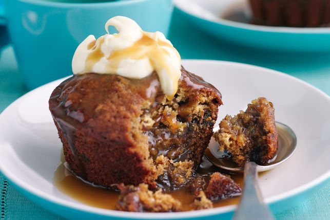

Yummy And Delectable ButterScotch Pudding Dessert

Description
Sticky date pudding is the snack de jour at cafes.
When we realised how easy they were to make at home
the jig was up. For something this decadent,
sticky date puddings are quite budget friendly as
the cheaper drier dates are better for soaking.
Ingredients
- Melted butter, to grease
- 285g (1 3/4 cups) pitted dates, halved
- 250ml (1 cup) boiling water
- 1 tsp bicarbonate of soda
- 80g butter, at room temperature
- 100g (1/2 cup) caster sugar
- 2 eggs
- 115g (3/4 cup) self-raising flour, sifted
- 75g (1/2 cup) plain flour, sifted
- 185ml (3/4 cup) pouring cream
- 160g (1 cup, lightly packed) brown sugar
- 60g unsalted butter, chopped
- Double cream, to serve
Steps To Making The Pudding
- Preheat oven to 180°C. Brush six 185ml (3/4-cup)
non-stick muffin pans with melted butter to lightly grease.
Line the bases with non-stick baking paper.
- Combine the dates, water and bicarbonate of soda in a bowl.
Set aside for 10 minutes to soften. Use a fork to coarsely mash.
- Use an electric beater to beat the butter and caster s
ugar in a bowl until pale and creamy. One at a time add the eggs,
beating well after each addition. Fold in the date mixture and the
combined self-raising flour and plain flour. Spoon the mixture into the
prepared pans and smooth the surfaces. Bake in oven for 25-30 minutes or
until the surfaces spring back when lightly tapped. Set aside in the pans for
5 minutes to stand before turning onto a wire rack to cool slightly.
- Meanwhile, place the pouring cream, brown sugar and unsalted
butter in a saucepan over medium heat. Cook, stirring,
for 5 minutes or until smooth.
- Divide the puddings among serving plates. Top with double
cream and drizzle over the sauce to serve.